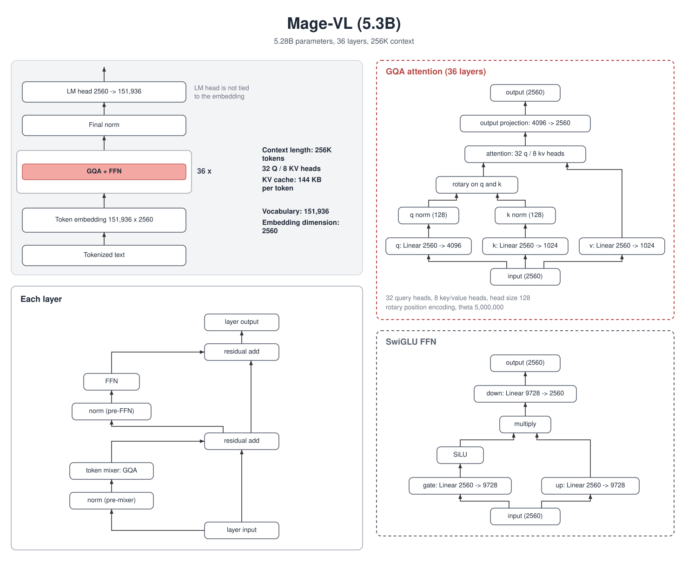

Mage-VL
microsoft/Mage-VL · released 25 Jul 2026 · read at commit d88b153285
1 of 4 key facts verified
- parameters
- 5.28B
- active per token (dense)
- all
- layers
- 36
- context tokens
- 262,144
- cache / token
- 144 KiB
In short
Dense decoder, GQA in all 36 layers (32 heads, 8 KV heads).
Layer by layer
Layer 1 is on the left.
- 36 Global attention
Diagram
Drawn by Gemini from verified fields, 24 of 24 checks passed · Open full size


Will it fit on my machine?
Weights plus the cache that grows with context, for one conversation. Runtime overhead is not included.
Context length
Weight precision
14.33 GiB
weights 9.83 GiB
cache 4.50 GiB
- 8 GB laptoptoo big
- 16 GB laptoptight
- 24 GB GPUfits
Weights = 5,278,537,216 parameters × bytes per parameter. Cache = 147,456 B per token × context, bf16. "Tight" means over 75% of the device's memory.
Facts and where they come from
Verified means two independent files agree.
| Fact | Value | Read from | Status |
|---|---|---|---|
| Total parametersweight file headers: sum of tensor shapes | 5,278,537,216 | weight file headers | one source |
| Layerstext_config.num_hidden_layers | 36 | config.json, weight file headers | verified |
| Layer mixtext_config.layer_types | 36 Global attention | config.json | one source |
| Context lengthtext_config.max_position_embeddings | 262,144 | config.json | one source |
| Hidden size (width)text_config.hidden_size | 2,560 | config.json, weight file headers | verified |
| Attention type and headstext_config.num_attention_heads | GQA · 32 heads (8 key-value) | config.json | one source |
| Cache per tokenbf16; sliding-window and constant states excluded | 147,456 B | ArchWatch calculator | computed |
All 19 fields
| Fact | Value | Read from | Status |
|---|---|---|---|
| Activation functiontext_config.hidden_act | silu | config.json | one source |
| Architecture name in the configmodel_type | mage_vl | config.json | one source |
| Designcomputed from the facts above: no expert keys | Dense | computed from the facts above | one source |
| FFN hidden sizetext_config.intermediate_size | 9,728 | config.json, weight file headers | verified |
| Gated FFNweight file headers: FFN gate/up/down tensor layout | yes | weight file headers | one source |
| Head sizetext_config.head_dim | 128 | config.json | one source |
| Input and output embeddings sharedtie_word_embeddings | no | config.json | one source |
| Normalised queries and keysweight file headers: q_norm/k_norm tensors | yes | weight file headers | one source |
| Position encodingtext_config.rope_parameters | rope theta: 5,000,000; rope type: default | config.json | one source |
| Released weight formatdtype | bfloat16 | config.json | one source |
| Vision encoder layersvision_config | 24 | config.json | one source |
| Vision encoder widthvision_config | 1,024 | config.json | one source |
| Vocabularytext_config.vocab_size | 151,936 | config.json, weight file headers | verified |